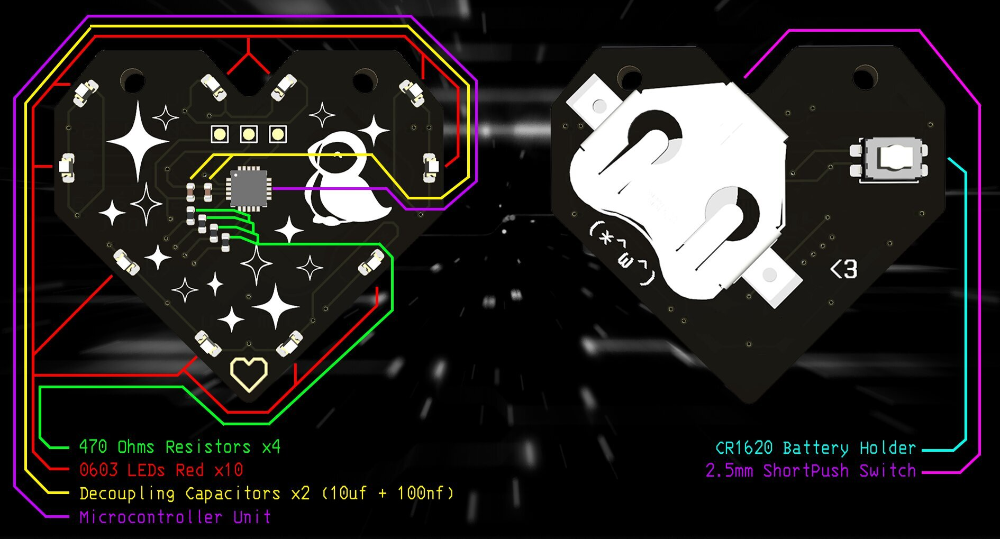
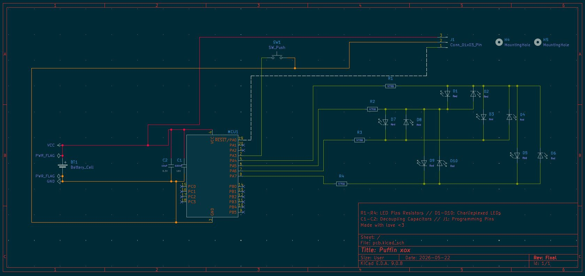
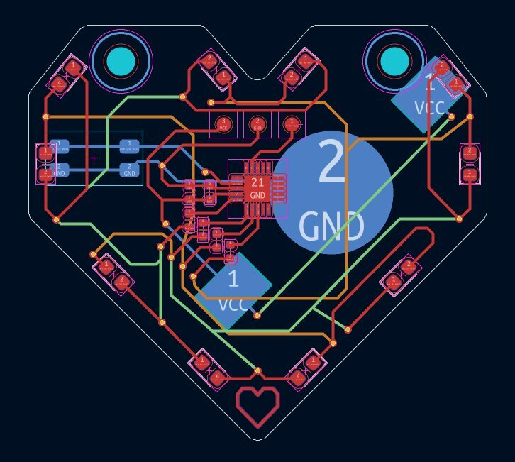
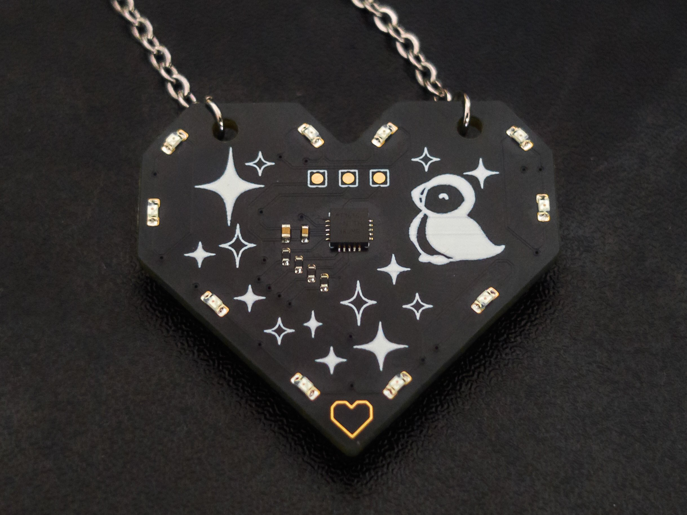

Puffin PCB
[SPR 2026] For my girlfriend's birthday, I wanted to make her something special and unique that would also reach her aesthethics, interests and be wearable. I've came to the idea of making a custom wearable and functional PCB in the form of a pendant.
CONCEPTION
The PCB files were made on KiCad. I had to make the custom board as small as possible, since this would end up being a pendant.

As part of an energy and cost efficiency effort, LEDs were charlieplexed to use less pins, since the microcontroller used supports LOW and HIGH states.
Using less pins also meant less resistors. and globally less components. 3 Connectors were also used for programming. Non-Plated Holes were also included for the chain's jump rings.
PLACEMENT & ROUTING
The charlieplexing made routing significantly more challenging. To increase the surface for routing, I opted for a 4 layers PCB, with inner layers only dedicated to charlieplexing and some minor voltages additions (Green and Orange routings).
To also prevent voltage drops from LEDs powering on, I decided to have two decoupling capacitors close to the MCU (AtTiny1616-m).

Another major constraint was the size of the battery holder. The SMD component used was pretty much the bottleneck of how small I couldve gotten the pcb to be. The only other component located at the back of the pcb is the button used to cycle through various effects.
Since assembly would be done by the manufacturer, I had to provide a valid BOM (Bill of Materials) with the exact components used, and their specifications.
FINAL RESULT
